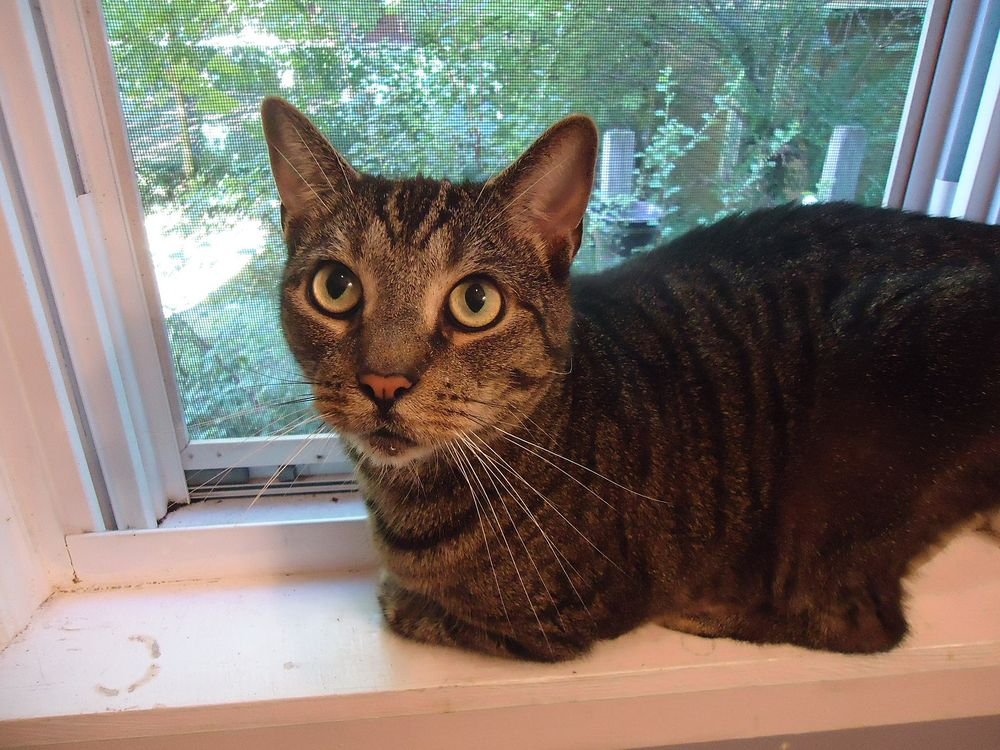
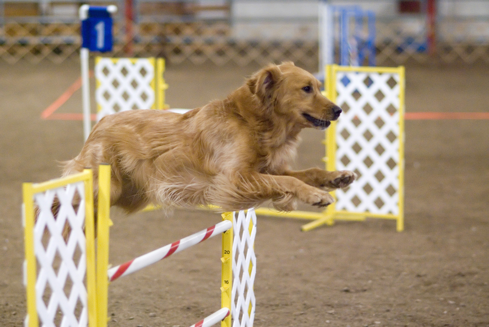
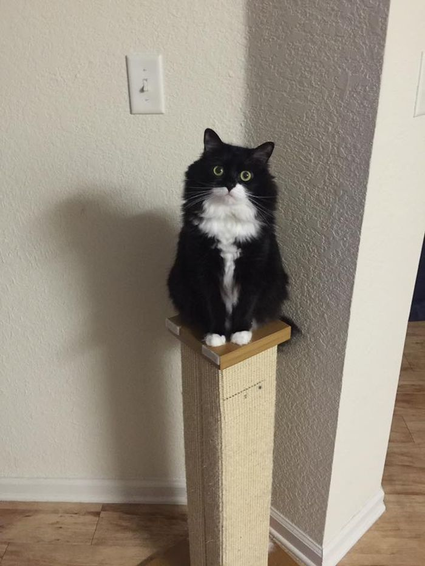
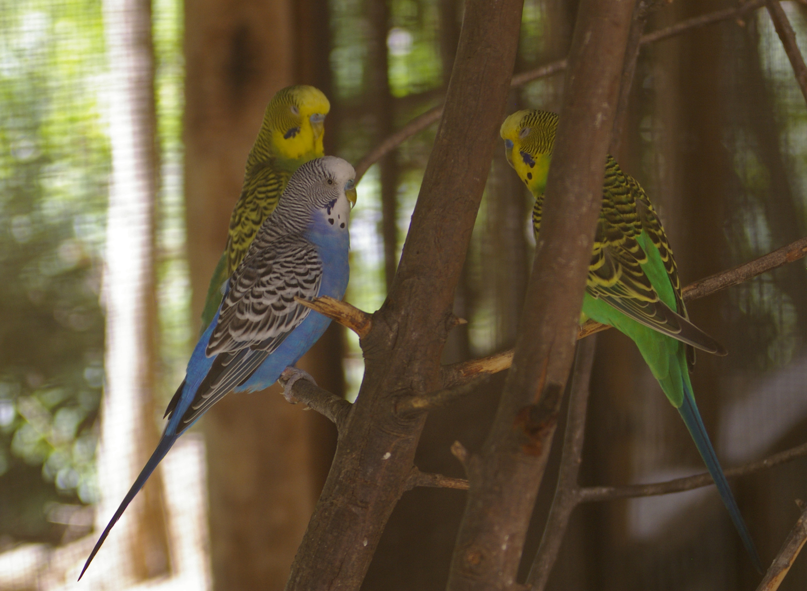
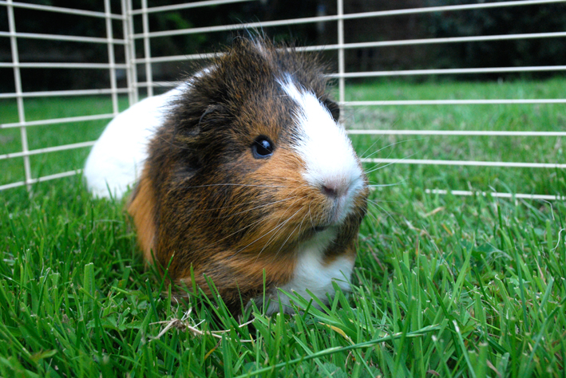
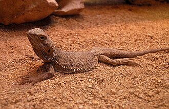
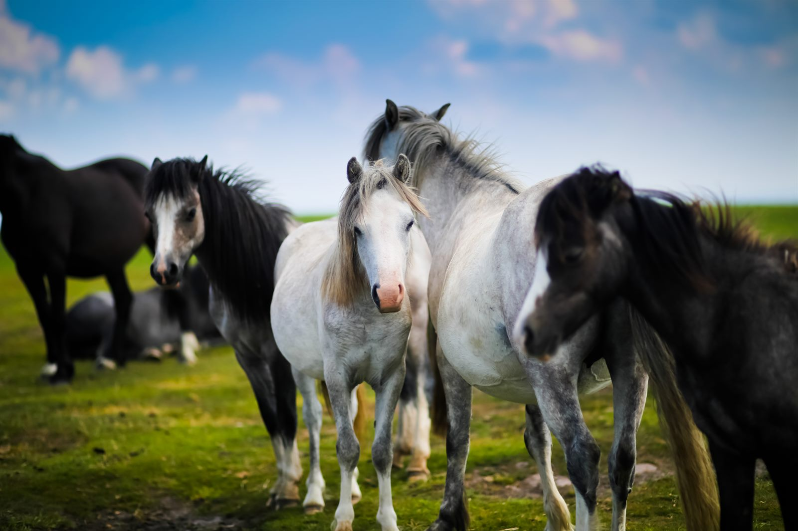

Nr. 01
Katzen leiden oft leise.
Wer nur auf Lärm, Kratzen oder Protest achtet, übersieht Rückzug, Langeweile und Schmerz.
Ehrliche, faktenbasierte Aufklärung über Tierhaltung. Kein erhobener Zeigefinger – sondern alles, was du wissen musst, bevor du Verantwortung für ein Lebewesen übernimmst.

Ein Link zur richtigen Zeit kann einen Kauf bremsen, einen Tierarztbesuch auslösen oder eine Haltung verbessern.
Erst Alltag, Geld, Zeit und Verantwortung prüfen, bevor aus einem Wunsch ein Lebewesen wird.
Ehrlich anfangen → 02Konkrete Haltungsthemen nach Tierart, ohne Ausreden und ohne Schönfärberei.
Tierart wählen → 03Warnsignale, Vergiftungen und der Moment, in dem Abwarten gefährlich wird.
Zum Notfall → 04Goldfischglas, Einzelvogel, Katermythen, Globuli: Was stimmt wirklich?
Mythen prüfen → 05Kein Tier zu nehmen kann die verantwortungsvollste Form von Tierliebe sein.
Druck rausnehmen →Nicht als Vorwurf. Als kurzer Perspektivwechsel für Menschen, die Tiere lieben, aber ein Detail übersehen.

Wer nur auf Lärm, Kratzen oder Protest achtet, übersieht Rückzug, Langeweile und Schmerz.

Viele Kleintiere brauchen Fläche, Struktur, Artgenossen und Rückzugsorte, nicht nur Futter und Streu.

Bei Atemnot, Krämpfen, Vergiftungsverdacht oder starken Schmerzen zählt jede Stunde.
Wähle eine Tierart für ausführliche Infos zu Haltung, Kosten und häufigen Fehlern.

Training und ZeitHundeSozial, teuer, zeitintensiv.
Umfeld gestaltenKatzenEinzeljäger, aber keine Einzelgänger.
Schwarm und RaumVögelSchwarmtiere, keine Dekoration.
Nicht allein denkenKleintiereKein Einstiegstier, kein Spielzeug.
Klima und TechnikExotenTechnisch anspruchsvoll.
Herde, Raum, KostenPferdeHerdentiere, nie Solisten.Wir gehen davon aus, dass jeder Mensch, der sich ein Tier holt, nur das Beste für dieses Tier will. Wenn es trotzdem schiefläuft, liegt das meistens nicht an bösem Willen – sondern an fehlenden Informationen. Diese Seite liefert genau die. Ehrlich, manchmal unbequem, aber immer im Sinne der Tiere.
Ein privates Projekt von zwei Tierfreunden aus Mecklenburg-Vorpommern. Wir sind weder Verein noch Organisation – nur zwei Menschen, denen Tierschutz am Herzen liegt. Deshalb diese Seite, und deshalb unterstützen wir auch die Streunerhilfe Plau e. V., die sich ehrenamtlich um Streunerkatzen in unserer Region kümmert.
Wa(h)re Haustier(liebe) ist ein privates Projekt – werbefrei, unabhängig und ehrenamtlich. Die laufenden Kosten für Hosting, Domain und Recherche tragen wir selbst. Wenn dir diese Seite geholfen hat, freuen wir uns über Unterstützung – für uns oder direkt für den Tierschutz:
Spenden an uns als Privatpersonen sind nicht steuerlich absetzbar. Die Streunerhilfe Plau e. V. ist ein eigenständiger gemeinnütziger Verein – dort ist deine Spende steuerlich absetzbar und fließt direkt in die Versorgung und Kastration von Streunerkatzen.